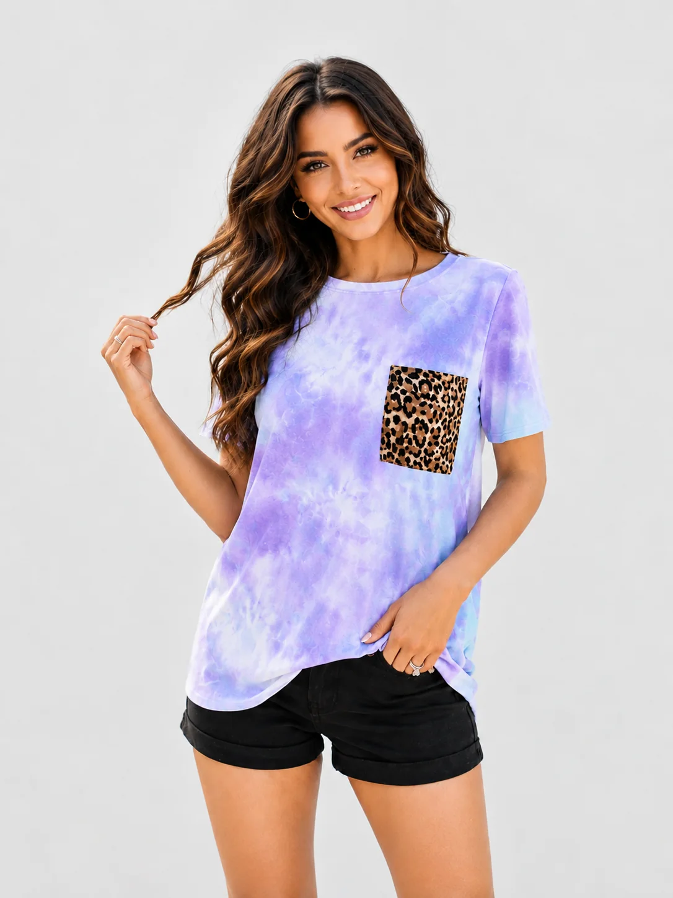

Core T-shirts
Crew-neck, V-neck, long-sleeve and other everyday silhouettes developed to the required fit and finish.
Knitted apparel sourcing
Coordinate fabric, weight, fit, neckline, construction, decoration, labels, washes and packing for casualwear ranges developed in Tiruppur.

Product categories
Product feasibility, materials, quantities and commercial terms are confirmed after the buyer brief is reviewed.
Crew-neck, V-neck, long-sleeve and other everyday silhouettes developed to the required fit and finish.
Oversized, cropped, shaped, panelled or detail-led styles requiring more specific pattern and construction control.
Lightweight tops and coordinating casual bottoms developed around movement, comfort and end use.
Relaxed tops, shorts, joggers and sets coordinated around softness, fit, recovery and wash performance.
Placement, repeat or all-over artwork prepared with defined size, colour, technique and durability expectations.
Labels, hangtags, folding and packing details coordinated according to approved buyer requirements.
Fabric & finish
A fabric name alone is not enough. Composition, weight, knit structure, finishing and testing expectations should support the intended garment and market.
| Fabric direction | Jersey, interlock, rib or another structure selected for the intended silhouette and use. |
|---|---|
| Composition | Cotton, blends or other fibres considered according to performance, hand feel and commercial requirements. |
| Weight & recovery | Defined in relation to coverage, drape, stretch, shape retention and season. |
| Colour & finish | Shade, wash, hand feel and appearance standards aligned through approved references. |
| Decoration | Print, embroidery, appliqué or other technique assessed for artwork, fabric and care requirements. |
| Testing | Any required dimensional stability, colourfastness, performance or market-specific testing must be agreed. |
Development flow
Confirm customer, market, use, season, fit direction and target quality.
Review fabric, colour, rib, thread, trims and finish requirements.
Apply measurements, construction, artwork and labelling information.
Assess fit, appearance, workmanship and any agreed testing needs.
Record final sample, fabric, colour, artwork and packing decisions.
Connect approved information to production and quality milestones.
Related garment pages
Common questions
Share the style, measurements, fabric composition and weight, colour, quantity, decoration, trims, labels, packing, delivery destination and required date.
Yes, subject to feasibility and order confirmation. Each element should be specified and approved through the development process.
Provide production-ready artwork where possible, including dimensions, placement, colours and technique. A sample or strike-off approval route should be agreed.
Send your style references, fabric direction, quantity, destination and required date.